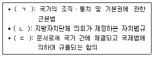
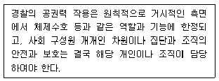
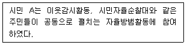
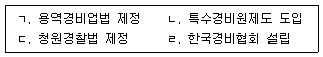
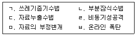
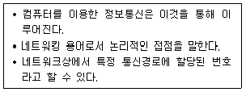

경비지도사-1차(법학개론,민간경비론) (2014-11-15 기출문제)
1과목: 법학개론
1. 국가의 전통적 구성요소가 아닌 것은?
- 국민
- 영토
- 주권
- 헌법재판소
(정답률: 69%)

2. 헌법이 명시하고 있는 법규명령이 아닌 것은?
- 부령
- 총리령
- 대통령령
- 감사원규칙
(정답률: 62%)
3. 신체의 자유에 관한 설명으로 옳지 않은 것은?
- 누구든지 법률에 의하지 아니하고는 체포ㆍ구속ㆍ압수ㆍ수색 또는 심문을 받지 아니한다.
- 체포ㆍ구속ㆍ압수ㆍ수색에는 적법한 절차에 따라 법관의 신청에 의하여 검사가 발부한 영장을 제시하여야 한다.
- 사법경찰관은 현행범을 발견하였을 경우 영장없이 체포를 할 수 있다.
- 모든 국민은 고문을 받지 아니하며, 형사상 자기에게 불리한 진술을 강요당하지 아니한다.
(정답률: 59%)
4. 다음 중 사회적 기본권에 해당하는 것은?
- 사유재산권
- 교육을 받을 권리
- 국가배상청구권
- 직업선택의 자유
(정답률: 41%)
5. 국회의 권한으로 옳은 것은?
- 탄핵심판권
- 권한쟁의심판권
- 긴급명령에 대한 승인권
- 명령ㆍ규칙에 대한 최종심사권
(정답률: 34%)
6. 다음 중 사회법에 속하는 것은?
- 상법
- 가등기담보 등에 관한 법률
- 특정범죄 가중처벌 등에 관한 법률
- 산업재해보상보험법
(정답률: 61%)
7. 근로기준법에 관한 설명으로 옳지 않은 것은?
- 근로조건은 근로자와 사용자가 동등한 지위에서 자유의사에 의하여 결정되어야 한다.
- 근로자와 사용자는 각자가 단체협약, 취업규칙과 근로계약을 지키고 성실하게 이행할 의무가 있다.
- 사용자는 중대한 사고발생을 방지하거나 국가안전보장을 위해 긴급한 필요가 있는 경우에 근로자를 폭행할 수 있다.
- 사용자는 근로자가 근로시간 중에 선거권을 행사하기 위하여 필요한 시간을 청구하면 거부하지 못하지만 그 선거권을 행사하는 데에 지장이 없으면 청구한 시간을 변경할 수 있다.
(정답률: 68%)
8. 고용보험법상 고용보험사업으로 명시되지 않은 것은?
- 실업급여
- 육아휴직 급여
- 직업능력개발 사업
- 저소득층 생계비지원
(정답률: 73%)
9. 국민연금법에 규정된 내용으로 옳은 것은?
- 급여의 종류에는 노령연금, 장애연금, 유족연금, 반환일시금이 있다.
- 국민연금 가입자는 직장가입자와 임의가입자로 이분(二分)된다.
- 기여금이란 직장가입자의 사용자가 부담하는 금액을 말한다.
- 국내에 거주하는 국민으로서 15세 이상 70세 미만인 자는 국민연금 가입 대상이 된다.
(정답률: 31%)
10. 국가공무원법에 명시된 공무원의 복무의무가 아닌 것은?
- 범죄 고발의 의무
- 친절ㆍ공정의 의무
- 비밀 엄수의 의무
- 정치 운동의 금지
(정답률: 63%)
11. 행정행위에 관한 설명으로 옳지 않은 것은?
- 내용이 명확하고 실현가능하여야 한다.
- 법률상 절차와 형식을 갖출 필요는 없다.
- 법률의 규정에 위배되지 않아야 한다.
- 정당한 권한을 가진 자의 행위라야 한다.
(정답률: 63%)
12. 행정기관이 그 소관 사무의 범위에서 일정한 행정목적을 실현하기 위하여 특정인에게 일정한 행위를 하거나 하지 아니하도록 지도, 권고, 조언 등을 하는 행정작용은?
- 행정예고
- 행정계획
- 행정지도
- 의견제출
(정답률: 70%)
13. 행정기관에 관한 설명으로 옳은 것은?
- 다수 구성원으로 이루어진 합의제 행정청이 대표적인 행정청의 형태이며 지방자치단체의 경우 지방의회가 행정청이다.
- 감사기관은 다른 행정기관의 사무나 회계처리를 검사하고 그 적부에 관해 감사하는 기관이다.
- 자문기관은 행정청의 내부 실ㆍ국의 기관으로 행정청의 권한 행사를 보좌한다.
- 의결기관은 행정청의 의사결정에 참여하는 권한을 가진 기관이지만 행정청의 의사를 법적으로 구속하지는 못한다.
(정답률: 46%)
14. 사권(私權)에 관한 설명으로 옳지 않은 것은?
- 사원권이란 단체구성원이 그 구성원의 자격으로 단체에 대하여 가지는 권리를 말한다.
- 타인의 작위ㆍ부작위 또는 인용을 적극적으로 요구할 수 있는 권리를 청구권이라 한다.
- 취소권ㆍ해제권ㆍ추인권은 항변권이다.
- 형성권은 권리자의 일방적 의사표시로 권리변동의 효과를 발생시키는 권리이다.
(정답률: 56%)
15. 다음 중 공법상의 의무가 아닌 것은?
- 납세의무
- 부양의무
- 교육의무
- 국방의무
(정답률: 77%)
16. 다음 각 용어에 관한 설명으로 옳은 것은?
- 권능이란 권리의 내용을 이루는 각개의 법률상의 작용을 말한다.
- 권원이란 일정한 법률상 또는 사실상 행위의 결과로 나타나는 효과를 말한다.
- 반사적 이익이란 특정인이 법률규정에 따라 일정한 행위를 하였을 때 그 법률상 이익을 직접 누릴 수 있는 권리를 말한다.
- 법인의 대표이사가 정관 규정에 의하여 일정한 행위를 할 수 있는 힘을 권리라 한다.
(정답률: 41%)
17. 근대민법의 3대원칙에 속하는 것은?
- 계약자유의 원칙
- 소유권 상대의 원칙
- 신의성실의 원칙
- 무과실책임의 원칙
(정답률: 55%)
18. 민법상 물권에 관한 설명으로 옳은 것은?
- 점유권은 소유권이 있어야만 인정되는 물권이다.
- 하나의 물건 위에 둘 이상의 소유권을 인정할 수 있다.
- 용익물권은 물건의 교환가치를 파악하여 특정한 물건을 채권의 담보로 제공하는 것을 목적으로 한다.
- 유치권은 법정담보물권이다.
(정답률: 32%)
19. 민법상 불법행위로 인한 손해배상을 설명한 것으로 옳은 것은?
- 태아는 불법행위에 대한 손해배상청구에 있어서는 이미 출생한 것으로 본다.
- 피해자가 수인의 공동불법행위로 인하여 손해를 입은 경우 가해자 각자의 기여도에 대해서만 그 손해의 배상을 청구할 수 있다.
- 고의 또는 과실로 심신상실을 초래하였더라도 심신상실의 상태에서 행해진 것이 라면, 배상책임이 인정되지 않는다.
- 미성년자가 타인에게 손해를 가한 경우에 그 행위의 책임을 변식할 지능이 없는 경우에도 배상책임이 있다.
(정답률: 56%)
20. 경비업자와 체결하는 경비계약에 관한 설명으로 옳지 않은 것은?
- 경비계약은 유상계약의 성질을 갖는다.
- 경비계약은 일종의 도급계약의 성질을 갖는다.
- 민간경비계약의 당사자는 경비업자와 고객이다.
- 경비계약은 합의 후 경비계약서를 인가받은 때에 성립한다.
(정답률: 52%)
21. 민법상 전형계약이 아닌 것은?
- 증여계약
- 교환계약
- 임치계약
- 중개계약
(정답률: 46%)
22. 경비업자 등의 손해배상책임에 관한 설명으로 옳은 것은?
- 경비원이 경비업무중 고의로 제3자에게 입힌 손해를 경비업자가 배상한 경우, 경비업자는 경비원에게 구상권을 행사할 수 없다.
- 경비업자는 경비원이 업무수행중 고의로 제3자에게 손해를 입힌 경우에만 이를 배상할 책임이 있다.
- 경비업무 도급인은 도급 또는 지시에 중대한 과실이 있는 경우에도 경비업자의 경비업무 수행으로 인하여 제3자에게 입힌 손해를 배상할 책임이 없다.
- 수인(數人)의 경비원이 업무수행중 고의 또는 과실로 경비대상에 손해를 발생시킨 경우에는 연대하여 그 손해를 배상하여야 한다.
(정답률: 65%)
23. 경비원이 업무수행 중 과실로 제3자에게 손해를 입힌 경우에 경비업자가 그 제3자에게 지는 책임은?
- 채무불이행책임
- 사용자배상책임
- 부당이득책임
- 진정연대책임
(정답률: 57%)
24. 상법상 회사에 관한 설명으로 옳지 않은 것은?
- 합명회사는 2인 이상의 무한책임사원으로 이루어진 회사이다.
- 합자회사의 유한책임사원은 금전 기타 재산으로만 출자할 수 있다.
- 유한책임회사는 주식회사에 비해 지분양도가 자유롭지 못하다.
- 상법상 회사의 설립은 인가주의를 취하고 있다.
(정답률: 45%)
25. 상법상 회사의 종류로 옳은 것은?
- 유한공사
- 무한책임공사
- 유한책임회사
- 무한회사
(정답률: 56%)
26. 손해보험으로 볼 수 없는 것은?
- 화재보험
- 생명보험
- 자동차보험
- 운송보험
(정답률: 54%)
27. 상법상 보험계약자의 의무가 아닌 것은?
- 보험료지급의무
- 보험증권교부의무
- 위험변경증가 통지의무
- 중요사항에 관한 고지의무
(정답률: 48%)
28. “악법도 법이다”라는 말이 강조하고 있는 법의 목적은?
- 법적 안정성
- 타당성
- 형평성
- 합목적성
(정답률: 62%)
29. 다음 ( )에 들어갈 법원(法源)으로 옳은 것은?

- ㄱ: 헌법, ㄴ: 조례, ㄷ: 조약
- ㄱ: 헌법, ㄴ: 법률, ㄷ: 명령
- ㄱ: 법률, ㄴ: 조약, ㄷ: 조례
- ㄱ: 법률, ㄴ: 명령, ㄷ: 조약
(정답률: 61%)
30. 법의 분류에 관한 설명으로 옳지 않은 것은?
- 당사자가 법의 규정과 다른 의사표시를 한 경우 그 법의 규정을 배제할 수 있는 법은 임의법이다.
- 당사자의 의사와 관계없이 강제적으로 적용되는 법은 강행법이다.
- 국가의 조직과 기능 및 공익작용을 규율하는 행정법은 공법이다.
- 대한민국 국민에게 적용되는 헌법은 특별법이다.
(정답률: 74%)
31. 법체계에 관한 설명으로 옳지 않은 것은?
- 일반적으로 승인된 국제법규는 국내법과 같은 효력을 가진다.
- 대통령의 긴급명령은 법률과 같은 효력을 가진다.
- 민법이 사법이므로 민사소송법도 사법에 속한다.
- 민법과 상법은 실체법이다.
(정답률: 70%)
32. 불명확한 사실에 대하여 공익 또는 기타 법정책상의 이유로 사실의 진실성 여부와는 관계없이 확정된 사실로 의제하여 일정한 법률효과를 부여하고 반증을 허용하지 않는 것은?
- 간주
- 추정
- 준용
- 입증
(정답률: 62%)
33. 법의 해석방법 중 유추해석 방법은?
- 서로 반대되는 두 개의 사실 중 하나의 사실에 관해서만 규정이 되어 있을 때 다른 하나에 관해서는 법문과 반대의 결과를 인정하는 해석방법
- 법규의 문자가 가지는 사전적 의미에 따라서 법규의 의미를 확정하는 해석방법
- 두 개의 유사한 사실 중 법규에서 어느 하나의 사실에 관해서만 규정하고 있는 경우에 나머지 다른 사실에 대해서도 마찬가지의 효과를 인정하는 해석방법
- 법규의 내용에 포함되는 개념을 문자 자체의 보통의 뜻보다 확장해서 효력을 인정함으로써 법의 타당성을 확보하려는 해석방법
(정답률: 55%)
34. 형법상 범죄의 성립요건이 아닌 것은?
- 구성요건 해당성
- 위법성
- 책임성
- 객관적 처벌조건
(정답률: 49%)
35. 형법상 재산에 대한 죄가 아닌 것은?
- 절도죄
- 뇌물죄
- 사기죄
- 손괴죄
(정답률: 36%)
36. 형사소송법의 기본이념이 아닌 것은?
- 실체적 진실발견의 원리
- 적정절차의 원리
- 재판 비공개의 원리
- 신속한 재판의 원리
(정답률: 59%)
37. 형사소송법상 소송주체가 아닌 것은?
- 검사
- 피고인
- 변호인
- 법원
(정답률: 54%)
38. 임의수사의 방법이 아닌 것은?
- 체포ㆍ구속
- 참고인진술 청취
- 감정ㆍ통역 또는 번역의 위촉
- 피의자 신문
(정답률: 65%)
39. 다음 공판절차 중 가장 먼저 이루어지는 것은?
- 인정신문
- 진술거부권의 고지
- 피고인 신문
- 판결의 선고
(정답률: 66%)
40. 형사소송법상 상소할 수 없는 자는?
- 검사
- 피고인
- 법무부장관
- 피고인의 법정대리인
(정답률: 68%)
2과목: 민간경비론
41. 민간경비의 개념에 관한 설명으로 옳지 않은 것은?
- 민간경비는 일반통치권에 근거하는 활동이다.
- 민간경비와 공경비는 모두 범죄예방 역할을 수행한다.
- 현재 우리나라에는 경찰관 신분을 가진 민간경비원이 없다.
- 국가는 민간경비의 제공 주체에 포함되지 않는다.
(정답률: 72%)
42. 우리나라 민간경비서비스의 특성에 관한 설명으로 옳지 않은 것은?
- 제공 대상은 비용을 지불할 수 있는 특정고객에 한정된다.
- 제공 내용은 특정고객의 이익을 만족시키기 위한 것이다.
- 제공 책임은 특정고객과의 계약관계를 통해서 형성된다.
- 제공 주체가 되려는 자는 관할관청에 신고하여야 한다.
(정답률: 82%)
43. 인력경비와 비교하여 기계경비의 장점으로 볼 수 없는 것은?
- 장기적으로 비용절감 효과를 가져 올 수 있다.
- 넓은 장소를 효과적으로 감시할 수 있다.
- 24시간 동일한 조건으로 지속적인 감시가 가능하다.
- 고객과의 친밀한 관계형성이 용이하다.
(정답률: 88%)
44. 기계경비시스템에 관한 설명으로 옳지 않은 것은?
- 기계경비업자는 경비대상시설에 관한 경보를 수신한 때에는 신속하게 그 사실을 확인하는 등 필요한 대응조치를 취하여야 하며, 이를 위한 대응체제를 갖추어야 한다.
- 기계경비업자는 관제시설 등에서 경보를 수신한 때에는 경보를 수신한 때부터 늦어도 20분 이내에는 도착시킬 수 있는 대응체제를 갖추어야 한다.
- 기계경비시스템의 구성요소는 경비대상시설, 관제시설, 기계경비원(관제경비원, 출동경비원) 등이다.
- 기계경비시스템의 운용목적은 도난ㆍ화재 등 위험에 대한 예방 및 대응이라고 수 있다.
(정답률: 80%)
45. 미국 민간경비 역사에서 핑커톤(A. Pinkerton)에 관한 설명으로 옳지 않은 것은?
- 남북전쟁 당시에 링컨 대통령의 경호업무를 담당하기도 하였다.
- 마약사범 일당을 검거하는데 결정적인 공헌을 하여 뉴욕경찰의 일원이 되었다.
- 범죄자를 유형별로 정리하는 방식은 오늘날 프로파일링 수사기법에 영향을 주었다.
- 핑커톤 국가탐정회사(Pinkerton National Detective Agency)를 설립하여 철도수송 안전확보에 일익을 담당하였다.
(정답률: 65%)
46. 민간경비와 공경비에 관한 설명으로 옳지 않은 것은?
- 민간경비원은 현행범을 영장 없이 체포할 수 있다.
- 공경비의 대상은 일반국민이다.
- 경비업자는 불특정 다수인에게 경비서비스를 제공할 의무가 없다.
- 민간경비는 법집행을 통하여 공공의 이익을 추구한다.
(정답률: 76%)
47. 다음 내용이 설명하고 있는 민간경비의 이론적 배경은?

- 경제환원론
- 공동화이론
- 수익자부담이론
- 이익집단이론
(정답률: 66%)
48. 다음의 경우에 해당하는 치안서비스 공동생산의 유형은?

- 개인적, 소극적 공동생산
- 개인적, 적극적 공동생산
- 집단적, 소극적 공동생산
- 집단적, 적극적 공동생산
(정답률: 73%)
49. 대규모 공연장ㆍ행사장 안전관리 업무의 민간위탁에 관한 설명으로 옳지 않은 것은?
- 민간위탁은 경찰의 공적 경비업무 부담을 증가시킨다.
- 민간경비업체는 행사주최 측과 긴밀한 사전 협의 및 협조를 통하여 질서유지 및 상황발생 시 대처할 수 있어야 한다.
- 민간경비업체는 상황에 따라 소방대 및 경찰지원을 요청하는 등 탄력성 있는 안전 관리활동이 가능하여야 한다.
- 민간경비업체는 이동 간 거리행사의 경우에 행사기획 단계부터 이동경로의 선택 및 참가예상인원의 파악 등의 업무도 가능하여야 한다.
(정답률: 80%)
50. 우리나라의 민간경비 연혁을 역사적 순서에 따라 배열하는 경우에 세 번째에 해당하는 것은?

- ㄱ
- ㄴ
- ㄷ
- ㄹ
(정답률: 68%)
51. 상업ㆍ주거시설의 현대화에 따른 민간경비의 변화에 관한 설명으로 옳지 않은 것은?
- 대규모 상업시설에서의 민간경비는 공중의 접근이 허용되는 사적인 시설물들의 비율이 증가할수록 확대된다.
- 대규모 상업시설에서 민간경비는 소비욕구를 최대화하기 위해 공중의 접근을 극소화 시키는 동시에, 상업적 활동을 침해하는 사람들의 불법행위를 통제하는 역할을 수행한다.
- 대규모 주거시설에서의 범죄예방활동과 위험관리는 공동체 구성원의 참여가 중요하다.
- 고급 주거시설의 경우에는 주변과의 관계성을 구축하기보다는 자체적이고 독립적인 규모와 기능의 극대화에 초점을 두는 경향이 있다.
(정답률: 69%)
52. 경비업법상 경비지도사의 직무가 아닌 것은?
- 경비원 교육기록의 유지
- 경비현장에 배치된 경비원에 대한 감독
- 경비원 후생ㆍ복지실태 점검
- 집단민원현장에 배치된 경비원에 대한 지도
(정답률: 69%)
53. 경찰의 범죄예방능력 한계가 발생하는 원인에 관한 설명으로 옳지 않은 것은?
- 경찰활동에 대한 주민들의 이해부족
- 경찰장비의 부족 및 노후화
- 경찰과 민간경비의 과도한 치안공조
- 타 부처 협조업무의 과중
(정답률: 72%)
54. 기계경비 오경보의 폐해에 관한 설명으로 옳지 않은 것은?
- 실제 상황이 아님에도 불구하고 기계장치의 자체결함, 이용자의 부적절한 작동, 미세한 환경변화 등에 민감하게 작동하는 경우가 있다.
- 오경보로 인한 헛출동은 경찰력 운용의 효율성에 장애가 되고 있다.
- 오경보를 방지하기 위한 유지ㆍ보수에도 적지 않은 비용이 들며, 이를 위해 전문 인력이 투입되어야 한다.
- 오경보를 줄이기 위하여 경찰청은 경찰관서에 직접 연결하는 기계경비시스템의 운용을 확대하도록 감독명령을 발령하였다.
(정답률: 84%)
55. 각국 민간경비의 발전에 관한 설명으로 옳지 않은 것은?
- 과거 영국에서는 규환제도(Hue and Cry)를 통하여 범죄가 발생하면 사람들이 고함을 지르고 범죄자를 추적하도록 의무를 부과하였다.
- 미국의 민간경비는 제1차 세계대전 당시 군수공장을 보호하는 임무를 수행하기도 하였다.
- 일본에서는 ‘장병위’라는 이름의 직업군인이 출현하여 민간경비의 발전에 장애가 되었다.
- 우리나라는 1960년대 초 미군부대의 용역경비를 담당한 것이 현대적 민간경비의 시초라고 할 수 있다.
(정답률: 61%)
56. 범죄예방을 위해서는 시민 스스로가 단결해야 한다는 개념을 확립하고, 보우가의 외근기동대(The Bow Street Runners)를 창설하는데 공헌한 사람은?
- 리처드 메인(Richard Mayne)
- 앨런 핑커톤(Allan Pinkerton)
- 로버트 필(Robert Peel)
- 헨리 필딩(Henry Fielding)
(정답률: 67%)
57. 외곽경비에 관한 설명으로 옳지 않은 것은?
- 경계구역 감시를 할 경우 구역 내의 가시지대를 넓히기 위해서 장애물을 제거해야한다.
- 폐쇄된 출입구의 잠금장치는 특수하게 만들고, 외견상 즉시 확인할 수 없어야 한다.
- 담장은 시설물 내의 업무활동을 은폐하기 위해서 설치될 수 있다.
- 긴급목적을 위한 출입문은 외부의 침입으로부터 열리지 않도록 하는 특별한 장치를 갖추고 있어야 한다.
(정답률: 72%)
58. 경비업법령상 국가중요시설의 시설주 또는 관리책임자의 무기관리 수칙에 관한 설명으로 옳지 않은 것은?
- 관할경찰관서장이 정하는 바에 의하여 무기의 관리실태를 매월 파악하고 다음 달 3일까지 관할경찰관서장에게 통보하여야 한다.
- 대여받은 무기를 빼앗기거나 대여받은 무기가 분실ㆍ도난 또는 훼손되는 등의 사고가 발생한 때에는 관할경찰관서장에게 그 사유를 지체없이 통보하여야 한다.
- 대여받은 무기를 빼앗기거나 대여받은 무기가 분실ㆍ도난 또는 훼손된 때에는 경찰청장이 정하는 바에 의하여 그 전액을 배상하여야 한다. 다만, 전시ㆍ사변, 천재ㆍ지변 그 밖의 불가항력의 사유가 있다고 지방경찰청장이 인정하는 때에는 그러하지 아니하다.
- 자체계획을 수립하여 보관하고 있는 무기를 매달 1회 이상 손질할 수 있게 하여야 한다.
(정답률: 60%)
59. 노사분규 발생시 경비요령에 관한 설명으로 옳지 않은 것은?
- 경비원들에 대한 사전교육을 실시하고 규율을 확인ㆍ점검한다.
- 직원들이 가지고 있는 열쇠를 모두 회수하고 새로운 잠금장치로 교체한다.
- 평화적인 시위의 경우 이를 보호하려는 노력을 하여야 한다.
- 일상적인 순찰활동을 통한 정기적인 확인ㆍ점검은 필요가 없다.
(정답률: 83%)
60. 내부절도의 경비요령에 관한 설명으로 옳지 않은 것은?
- 상점의 현금보관장소는 내부인의 직접적인 접근이 이루어지지 않도록 유의할 필요는 없다.
- 직원의 채용단계에서부터 인사담당자와의 협조 하에 신원조사를 실시한다.
- 경비 프로그램을 수시로 변화시킨다.
- 감사부서와의 협조 하에 정기적으로 정밀한 회계감사를 실시하는 것도 한 방법이다.
(정답률: 74%)
61. 화재예방과 관련하여, 발화의 3요소로 옳지 않은 것은?
- 연료
- 바람
- 산소
- 열
(정답률: 72%)
62. 매우 밝은 하얀빛을 내고, 경계구역과 사고발생 지역에 사용하기에 매우 유용 하나 상대적으로 비싼 것이 단점인 조명은?
- 석영등
- 적외선등
- 수은등
- 나트륨등
(정답률: 77%)
63. 호송경비시 위해발생의 대응요령에 대한 설명으로 옳지 않은 것은?
- 위해발생시 인명 및 신체의 안전을 최우선시 한다.
- 위해발생시 신속하게 차량용 방범장치를 해제한 후 탑재물품을 차량에서 분리시켜 보호한다.
- 경비원이 소지하는 분사기와 경봉은 정당한 범위 내에서 적절하게 사용한다.
- 습격사고 발생 시에는 큰소리, 확성기, 차량용 경보장치 등으로 주변에 이상상황을 알린다.
(정답률: 79%)
64. 경비업법령상 경비원이 휴대할 수 있는 장비에 해당하지 않는 것은?
- 목검
- 경적
- 단봉
- 안전방패
(정답률: 66%)
65. 우리나라 민간조사제도에 관한 설명으로 옳지 않은 것은?
- 민간조사제도가 하나의 정형화된 형식을 갖추고 제도적으로 정착되어 운영되고 있지 않다.
- 경비업법상 민간조사원이 별도로 규정되어 있지 않다.
- 민간조사 관련 분야에 종사하고자 하는 자는 관할관청에서 서비스업으로 허가를 받아야 한다.
- 경비업법상 민간조사업무는 경비업무의 한 영역이라고 보기 어렵다.
(정답률: 69%)
66. 확인된 위험의 대응방법에 대한 설명으로 옳지 않은 것은?
- 위험의 제거:위험관리에서 최선의 방법은 확인된 모든 위험요소를 제거하는 것이다.
- 위험의 회피 : 범죄 및 손실이 발생할 기회를 아예 제공하지 않는 것이다.
- 위험의 감소:위험성이 높은 보호대상을 한 곳에 집중시키지 않고 여러 곳에 분산시키는 것이다.
- 위험의 대체:직접적으로 위험을 제거하거나 감소 및 최소화시키기보다는 보험과 같은 대체수단을 통해서 손실을 전보하는 방법이다.
(정답률: 73%)
67. 민간경비조직에서 통솔범위의 결정요인으로 옳지 않은 것은?
- 직무의 성질
- 시간적 요인
- 계급의 수
- 참모와 정보관리체제
(정답률: 56%)
68. 경비업법령상 특수경비원의 교육훈련 및 감독에 관한 설명으로 옳지 않은 것은?
- 특수경비업자는 특수경비원을 채용한 경우 특수경비원의 부담으로 신임교육을 받도록 할 수 있다.
- 채용 전 3년 이내에 특수경비업무에 종사하였던 경력이 있는 사람을 특수경비원으로 채용한 경우에는 신임교육대상에서 제외할 수 있다.
- 특수경비업자는 소속특수경비원에 대하여 매월 6시간 이상 직무교육을 실시하여야 한다.
- 관할경찰관서장은 시설주 및 특수경비원의 무기관리상황을 매월 1회 이상 점검하여야 한다.
(정답률: 78%)
69. 신용정보회사등이 정보원, 탐정, 그 밖에 이와 비슷한 명칭의 사용을 금지하고 있는 법률은?
- 개인정보보호법
- 신용정보의 이용 및 보호에 관한 법률
- 정보통신망 이용촉진 및 정보보호 등에 관한 법률
- 경비업법
(정답률: 50%)
70. 청원경찰의 운영지도를 담당하는 경찰청의 부서장은?
- 위기관리센터장
- 경비과장
- 경호과장
- 생활안전과장
(정답률: 46%)
71. 민간경비원의 임용과 직무에 관한 설명으로 옳은 것은?
- 일반경비원은 시설경비ㆍ호송경비ㆍ신변보호ㆍ기계경비업무를 수행한다.
- 특수경비원은 국가중요시설 등 경비구역 내에서 경비목적을 위해 어떠한 경우에도 무기휴대 및 사용을 할 수 없다.
- 청원경찰은 경비구역 내에서 경비목적을 위해 필요한 경우, 불심검문, 무기사용 등 경찰공무원법에 따른 경찰관의 직무를 수행할 수 있는 권한을 갖는다.
- 청원경찰은 지방경찰청장이 임용하되, 청원주의 승인을 받아야 한다.
(정답률: 61%)
72. 융합보안의 개념에 관한 설명으로 옳은 것은?
- 권한 없는 접근의 제지 및 억제, 지연 그리고 범죄 등에 의한 위험 및 위험의 감지 등의 활동을 말한다.
- 외부차량과 내부직원ㆍ계약자ㆍ잡상인ㆍ방문객 등의 출입에 대해 이들의 신원을 확인ㆍ지시ㆍ제한하는 활동이다.
- 컴퓨터시스템에 저장되어 있거나, 컴퓨터 네트워크 상에서 전달되고 있는 정보를 안전하게 관리ㆍ보호하는 활동이다.
- 출입통제, 접근감시, 잠금장치 등과 불법 침입자 정보인식시스템 등을 상호 연계하여 보안의 효과성을 높이는 활동이다.
(정답률: 70%)
73. 정보보호에 관한 기본원칙으로 옳지 않은 것은?
- 정보시스템 소유자, 공급자, 사용자 및 기타 관련자 간의 책임을 명확하게 해야한다.
- 정보시스템의 보안은 시간이 경과하더라도 주기적인 재평가가 요구되지 않는다.
- 정보시스템의 보안은 정보의 합법적 사용과 전달이 상호조화를 이루어져야 해야한다.
- 정보시스템의 보안은 타인의 권리와 합법적 이익이 존중ㆍ보호되도록 운영되어야 한다.
(정답률: 77%)
74. 사이버공격의 유형에서 멀웨어(malware) 공격이 아닌 것은?
- 바이러스
- 트로이 목마
- 버퍼 오버플로
- 슬래머
(정답률: 50%)
75. 컴퓨터범죄에서 자료의 부정조작 유형이 아닌 것은?
- 콘솔조작
- 컴퓨터 스파이
- 출력조작
- 프로그램조작
(정답률: 68%)
76. 경제적 이익을 목적으로 컴퓨터에 의하여 처리ㆍ보관ㆍ전송되는 자료나 처리결과 또는 프로그램을 권한 없이 취득ㆍ이용하는 유형의 컴퓨터 범죄수법으로 옳지 않은 것을 모두 고른 것은?

- ㄱ, ㄷ, ㄹ
- ㄱ, ㄷ, ㅁ
- ㄴ, ㄹ, ㅁ
- ㄴ, ㅁ, ㅂ
(정답률: 37%)
77. 다음 설명에 모두 부합하는 용어는?

- 포트(ports)
- 방화벽(protector)
- 패치(patch)
- 스파이웨어(spyware)
(정답률: 71%)
78. 청원경찰법상의 내용으로 옳지 않은 것은?
- 청원경찰은 청원경찰의 배치 결정을 받은 자와 배치된 기관ㆍ시설 또는 사업장 등의 구역을 관할하는 순찰지구대장의 감독을 받아야 한다.
- 청원경찰의 임용자격, 임용방법 등에 관하여는 대통령령으로 정한다.
- 청원주는 청원경찰의 봉급과 수당 등의 청원경찰경비를 부담해야 한다.
- 국가공무원법상의 결격사유에 해당하는 사람은 청원경찰로 임용될 수 없다.
(정답률: 84%)
79. 우리나라 민간경비의 개선방안으로 볼 수 없는 것은?
- 경비인력의 전문화
- 청원경찰법과 경비업법의 일원화
- 기계경비 중심에서 인력경비 중심으로의 비중 확대
- 기계경비시스템 및 장비의 현대화
(정답률: 79%)
80. 민간산업보안에 관한 설명으로 옳지 않은 것은?
- 첨단 전자장비의 혁신적 발전으로 산업스파이에 의한 산업기밀이 유출될 수 있는 위험요소들이 더욱 많아지고 있다.
- 국내외 경제침체와 기업의 구조조정 등 사회적ㆍ경제적 불안정으로 인한 도덕적 해이 현상이 심화되면서 산업스파이 행위가 사회적 문제가 되고 있다.
- 보안구역 출입자는 임직원, 상주 협력업체, 상시출입자, 방문객 등으로 구분되지만, 출입권한을 차등화할 필요는 없다.
- 외부 방문객에 대한 별도 면회실을 운영하고, 외부인 예약방문제도를 실시하는 등 외부인에 대한 시설관리대책이 필요하다.
(정답률: 76%)